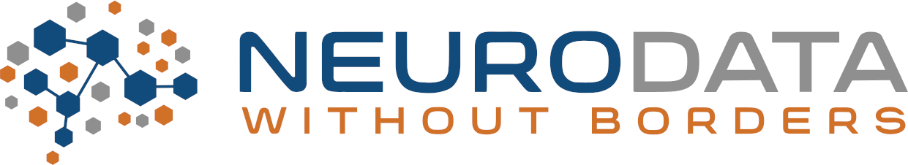

NWB Workshops and Hackathons

Welcome to the 9th NWB User Days Workshop!
- Report
- Dates and Location
- Overview
- Registration
- Logistics
- Organizing Committee
- Resources
- How to prepare?
- Projects
- Objective
- Agenda
Report
The final report for the 9th NWB User Days is now available on GitHub (PDF) (LaTeX).
Dates and Location
- Dates: September 21-23, 2020
- Location: Anywhere with an internet connection
Overview
The workshop will focus primarily on user training, including lessons for complete beginners to NWB and training in more advanced usage of NWB. There will be breakout sessions where the developers of state-of-the-art data analysis, visualization, and management tools (e.g., CaImAn, SpikeInterface, DANDI, suite2p, DataJoint, and more) will demonstrate their tools and show how to use NWB with their tools. There will also be time for attendees to work on NWB-related projects, such as converting data to NWB, using NWB-compatible software tools, or going through the NWB online tutorials.
To accommodate researchers in Europe, the Middle East, and Africa, we are holding this workshop 9am-6pm Central European Time (UTC+2).
Registration
Registration is now closed. Please stay tuned for the next NWB User Days Workshop in 2021.
The workshop is open to the public. Please complete our registration form to attend the event.
Note: The workshop schedule is centered around 9am-6pm Central European Summer Time (UTC+2).
Logistics
We will be using the Zoom videoconferencing platform for the meeting. We will send an email in the days before the workshop with Zoom links.
It is possible to use Zoom from the browser, but we recommend you install the Zoom app on your computer or phone. See installation instructions here.
Organizing Committee
Program chairs: Ryan Ly, Benjamin Dichter, Andrew Tritt, Pam Baker, and Oliver Rübel
Additional organizational support is provided by the Kavli Foundation.
Resources
Recorded talks will be uploaded after the talks are given.
How to prepare?
Install the Python or MATLAB software for NWB:
- PyNWB (Python): https://pynwb.readthedocs.io/en/stable/getting_started.html
- MatNWB (MATLAB): https://neurodatawithoutborders.github.io/matnwb/
Projects
During the workshop, there will be time to work on NWB-related projects to practice using the NWB software and ask questions to the NWB developers. Working on a project is optional but encouraged for you to get the most out of this workshop.
Here are suggestions for projects:
- convert some of your or a collaborator’s data to NWB
- convert data from a public archive to NWB
- integrate a software tool with NWB
- work through NWB online tutorials
- practice using NWB-compatible tools on publicly available NWB data, e.g., on DANDI
Please create a project page with a description of the goals of your project. See the instructions here to create a project page. We will use these pages to connect people who are working on similar projects (e.g. converting data from the same acquisition system) and follow your progress.
If you have questions about choosing a project or creating a project page, please attend the pre-workshop session on Thursday, September 17 at 4-4:30pm CEST (Zoom link will be sent by email) or email the organizers.
Project Pages
- Integrate software tools for simulation and analysis
- Learning how to convert files into the NWB file format for the TRR Retune
- One-Photon Calcium Imaging of Neuronal Dynamics During Behaviour
- MIES
- Convert PFC Neuropixels Data to NWB
- Port Current LFP/Behavioral Database to NWB
- Convert simulated primary motor cortex data to NWB format
- Convert 2P and Neuropixels Ephys to NWB
Objective
The Neurodata Without Borders: Neurophysiology project (NWB, https://www.nwb.org/) is an effort to standardize the description and storage of neurophysiology data and metadata. NWB enables data sharing and reuse and reduces the energy barrier to applying data analysis both within and across labs. Several laboratories, including the Allen Institute for Brain Science, have wholeheartedly adopted NWB. The community needs to join forces to achieve data standardization in neurophysiology.
The purpose of the NWB User Days training workshops is to bring the experimental neurophysiology community together to further the adoption and development of NWB, the NWB software libraries, and scientific workflows that rely on NWB. Members of the community will exchange ideas and best practices for using NWB, share NWB-based tools, surface common needs, resolve coding issues, make feature requests, brainstorm about future collaboration, and make progress on current blockages. The event will also enable NWB developers and users to interact with each other to facilitate communication, gather requirements, and train users.
Agenda
All times are in Central European Summer Time (CEST; UTC+2)
This calendar view shows the workshop agenda. We strongly encourage you to attend the first three hours of Day 1 for an introduction to NWB and NWB software tools. In the afternoons of all three days, there will be optional breakout sessions where you can learn more about community software tools that support NWB. And in the mornings of Days 2 and 3, there will be optional tutorials on how to use NWB for different types of data and situations, as well as a discussion about NWB and data standardization in neurophysiology on Day 3.
We recommend that you attend the sessions that would be useful to you. When you are not attending a session, we encourage you to work on your NWB-related projects (e.g., converting your data to NWB, doing NWB exercises, running the tutorials yourself). Developers will be available to answer questions on Slack throughout the workshop, as well as on Zoom during the virtual coffee breaks.
You can add this Google Calendar or iCal calendar to your personal calendar to see the workshop sessions in your time zone.

Detailed agenda:
| Day 1 | Monday, September 21 | ||||||||
|---|---|---|---|---|---|---|---|---|---|
| 8:45 - 9am (CEST) | Call-in time, work out any technical issues | ||||||||
| 9 - 9:10am | Welcome and introduction: How to get the most out of this workshop (Ryan Ly) | ||||||||
| 9:10 - 9:55am | Overview of NWB: An ecosystem for neurophysiology data standardization (Oliver Ruebel) Recording on YouTube |
||||||||
| 10 - 11:45am |
NWB tools showcase (5-7 min per tool),
- MIES - calciumImagingAnalysis - CaImAn - suite2p - SpikeInterface - DataJoint - NWB Explorer / Open Source Brain - NWB Widgets - DANDI - NWB & DataJoint Integration in the Frank Lab, UCSF |
||||||||
| 12 - 1pm | Break / Virtual coffee shop - Hack on projects, do NWB exercises, ask questions to NWB developers on Zoom |
||||||||
| 1 - 2pm | Tutorial: Reading NWB data in Python and Matlab (Ben Dichter, Ryan Ly)
|
||||||||
| 2 - 6pm |
In-depth tool breakout sessions, Day 1:
|
| Day 2 | Tuesday, September 22 | ||||||
|---|---|---|---|---|---|---|---|
| 9 - 9:55am | Introduction to NWB for intracellular electrophysiology (Oliver Ruebel, Pam Baker)
|
||||||
| 10 - 10:55am | Introduction to NWB for extracellular electrophysiology in Python (Ryan Ly)
|
||||||
| 11 - 11:55am | Introduction to NWB for extracellular electrophysiology in MATLAB (Ben Dichter)
|
||||||
| 12pm - 12:55pm | Introduction to NWB for optical physiology in Python (Ryan Ly)
|
||||||
| 1pm - 1:55pm | Introduction to NWB for optical physiology in MATLAB (Ben Dichter)
|
||||||
| 2 - 3pm | Break / Virtual coffee shop - Hack on projects, do NWB exercises, ask questions to NWB developers on Zoom | ||||||
| 3 - 6pm |
In-depth tool breakout sessions, Day 2:
|
| Day 3 | Wednesday, September 23 | ||||||
|---|---|---|---|---|---|---|---|
| 9 - 9:45am | NWB extensions: How to store and share non-standardized data types in NWB (Ryan Ly) Recording on YouTube |
||||||
| 9:50 - 10:20am | Advanced write in PyNWB (compression, chunking, iterative write, and parallel access) (Andrew Tritt) <a href=https://youtu.be/wduZHfNOaNg>Recording on YouTube</a> |
||||||
| 10:20 - 10:40am | Advanced write in MatNWB (compression, chunking, and iterative write) (Ben Dichter) <a href=https://youtu.be/PIE_F4iVv98>Recording on YouTube</a> |
||||||
| 10:40 - 10:55am | Review of workshop projects | ||||||
| 11 - 11:55am | Discussion: The current state of NWB and data standardization in neurophysiology
|
||||||
| 12 - 3pm | Break / Virtual coffee shop - Hack on projects, do NWB exercises, ask questions to NWB developers on Zoom | ||||||
| 3 - 6pm |
In-depth tool breakout sessions, Day 3:
|
Disclaimer
This website and related content were prepared as an account of or to expedite work sponsored at least in part by the United States Government. While we strive to provide correct information, neither the United States Government nor any agency thereof, nor The Regents of the University of California, nor any of their employees, makes any warranty, express or implied, or assumes any legal responsibility for the accuracy, completeness, or usefulness of any information, apparatus, product, or process disclosed, or represents that its use would not infringe privately owned rights.
Reference herein to any specific commercial product, process, or service by its trade name, trademark, manufacturer, or otherwise, does not necessarily constitute or imply its endorsement, recommendation, or favoring by the United States Government or any agency thereof, or The Regents of the University of California. Use of the Laboratory or University’s name for endorsements is prohibited.
The views and opinions of authors expressed herein do not necessarily state or reflect those of the United States Government or any agency thereof or The Regents of the University of California. Neither Berkeley Lab nor its employees are agents of the US Government.
Berkeley Lab web pages link to many other websites. Such links do not constitute an endorsement of the content or company and we are not responsible for the content of such links.